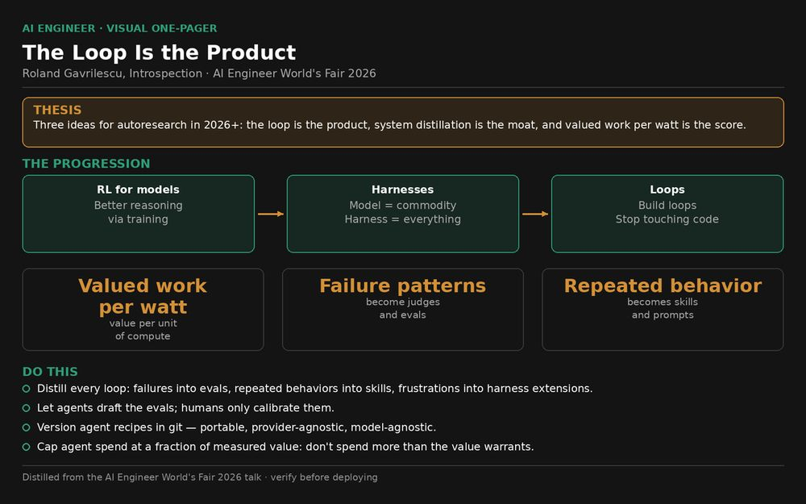
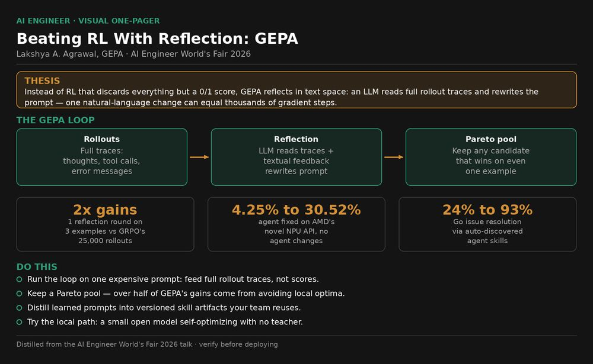
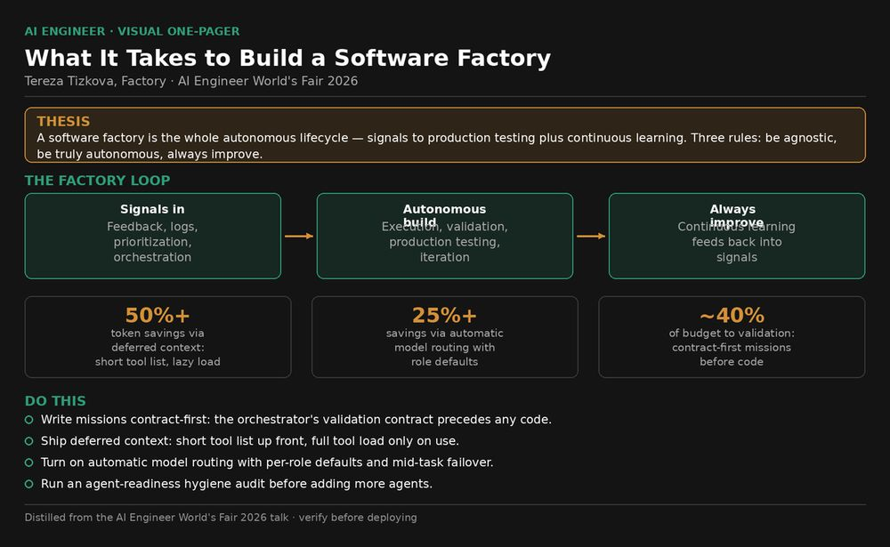
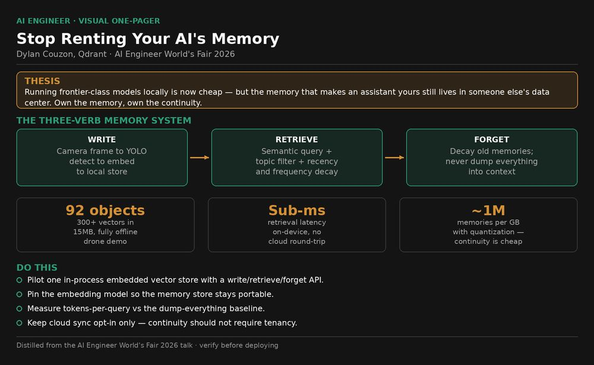

Visual index
Visual index
Every infographic in the playbook, full-size. Tap one to open its talk.

Roland Gavrilescu, Introspection

Lakshya A. Agrawal, GEPA

Harald Kirschner

Cast AI

Tereza Tizkova, Factory

Dylan Couzon, Qdrant